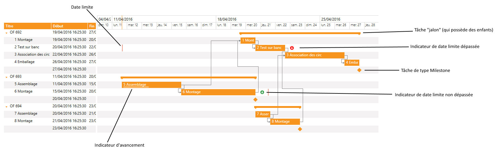

La première fonctionnalité d’un Gantt est d’assurer l'affichage de tâches, avec ses relations. Outre une date de début et de fin, chaque tâche possède certaines propriétés :
Enfants.
Il est possible de créer des tâches et ensuite les ajouter à la liste des enfants d'une autre tâche pour créer une tâche "jalon".
Pour ce faire, il faut appeler la fonction XmeGanttAddChild. Ces enfants sont stockés dans une liste d'enfants, spécifique à la tâche et dont l’identifiant est stocké dans la variable ObjectTask.IdListChildren.
Attention : En cas de suppression d’une tâche, veillez à détruire cette liste en exécutant un ListDestroy.
Dépendances.
Les dépendances entre les tâches sont créées via la fonction XmeGanttAddDependencie.
Ces dépendances sont stockées dans une liste de dépendances, spécifique à la tâche et dont l’identifiant est stocké dans la variable ObjectTask.IdListDependencies.
Attention : En cas de suppression d’une tâche, veillez à détruire cette liste en exécutant un ListDestroy.
Avancement.
L'objet Gantt propose d'afficher sur les tâches le pourcentage d'avancement.
Il faut le renseigner au niveau de l'enregistrement ObjectTask et doit prendre une valeur entre 0 et 100.
Date limite.
Si on spécifie une date limite sur une tâche, un pictogramme matérialisera cette information. Si la date est dépassée, il sera rouge et vert sinon.
Création d'un rendez-vous
La création d'une tâche dans le Gantt se fait par appel à la fonction XmeGanttNewTask.
La tâche créée est ensuite identifiée par la valeur de retour de cette fonction.
Enregistrement descriptif d'un rendez-vous
L'enregistrement descriptif d'une tâche dans le dictionnaire ddGantt.dhsd est ObjectTask.

Voir l'exemple de programmation complet.